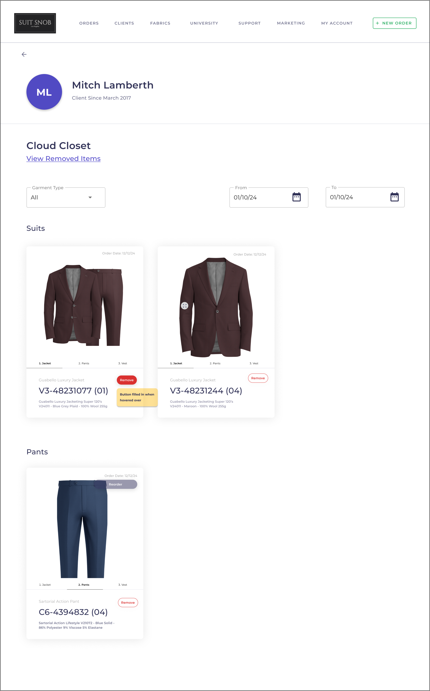
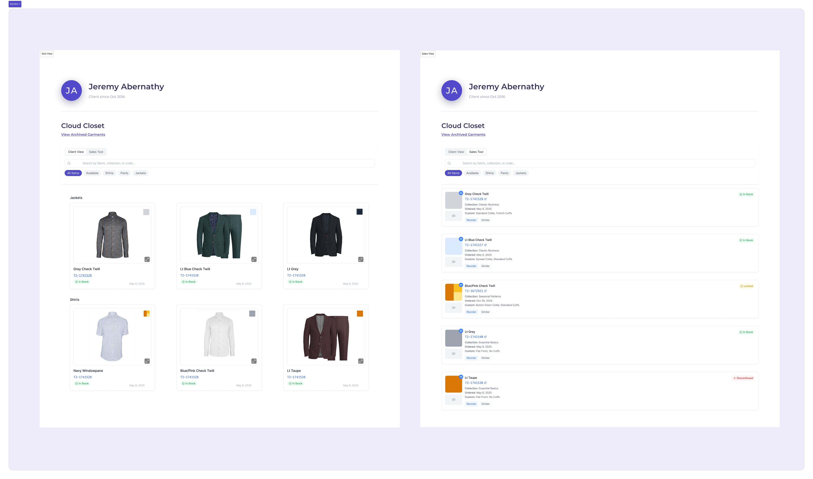

Project Impact
- 40% efficiency improvement in sales consultation workflow
- Dual-mode interface serves both client presentations and operational needs
- Mobile-first design optimized for tablet use in the field
- AI-enhanced iteration compressed 3-week timeline to 3 days
The Challenge
Trinity's "Cloud Closet" feature was launched with high hopes—a digital catalog where sales representatives could showcase their clients' complete purchase history. Initial reception was enthusiastic; clients loved the visual presentation and sales reps reported it "elevated their business in clients' eyes."
However, after three months of field use, a critical problem emerged: the interface optimized for client presentations was functionally unusable as a sales tool.
The core tension: Sales reps needed to quickly identify fabric details, check availability, and make recommendations based on purchase history. But the existing 3D garment mockups made fabric patterns impossible to discern at a glance, and critical information like fabric codes weren't easily accessible. The tool had become a showpiece rather than a functional sales aid.
Strategic Approach
Identifying the Real Problem
A mid-level designer might have approached this as a visual clarity issue—"make the fabric patterns more visible." But the customer feedback revealed something deeper: we were trying to serve two distinct user personas with fundamentally different needs using a single interface.
Persona 1: The Client
- Needs: Visual impression, brand confidence, ease of browsing
- Context: Presentation mode, emotional connection to past purchases
- Success metric: "Wow factor," perception of professionalism
Persona 2: The Sales Representative
- Needs: Quick data access, fabric availability, purchase patterns
- Context: Active consultation, time pressure, decision support
- Success metric: Speed to insight, recommendation confidence
Rather than compromise both experiences by finding a middle ground, I proposed a strategic solution: dual-mode interface architecture that would let users toggle between presentation and functional modes.
Research & Discovery
User Interviews
I conducted structured interviews with 8 sales representatives who had been using Cloud Closet for 2+ months. Key findings:
Pain Points:
- "I can't tell if it's the grey check or the blue check without clicking in"
- "I'm taking screenshots to zoom in on fabric patterns during calls"
- "I need the fabric code to check inventory, but it's buried"
- "The 3D mockup looks great but doesn't help me sell the next piece"
Positive Signals:
- Clients consistently impressed by the visual presentation
- Reduced need to dig through email order confirmations
- Professional differentiation from competitors
Key Design Decisions
1. Toggle Architecture vs. Separate Pages
Decision: Single-page toggle rather than navigation to separate views
Rationale:
- Sales reps often switch contexts mid-conversation ("Let me show you what this looks like" → "Let me check that fabric")
- Maintaining context and position in the catalog was critical
- Technical simplicity (one data model, one component system)
- Reduced cognitive load (same content, different lens)
2. Information Hierarchy by Mode
Client View (Presentation Mode):
- Priority 1: Visual impact (large 3D garment mockups)
- Priority 2: Purchase chronology (what they bought when)
- Priority 3: Supplemental details (accessible but not prominent)
Sales Tool Mode:
- Priority 1: Fabric identification (large swatches, clear codes)
- Priority 2: Availability indicators (in stock, out of stock, lead time)
- Priority 3: Customization details (what makes each piece unique)
- Priority 4: Purchase context (order dates, pricing)
3. Mobile-First Responsive Strategy
Sales representatives predominantly used tablets during client consultations. This informed several critical design decisions:
- Touch targets minimum 44x44px (Apple guidelines)
- Swipe-friendly card layouts
- Persistent toggle control (always accessible, never scrolls away)
- Optimized image loading for cellular connections
- Single-column layout on mobile (no side-by-side comparisons)
AI-Enhanced Workflow
This project showcased how I leverage AI as a force multiplier for iteration speed and exploration:
Rapid Prototype Generation
Using Claude, I generated 15+ layout variations in the first week—far beyond what would be feasible with traditional methods. This allowed us to validate concepts with stakeholders quickly rather than committing to one direction prematurely.
Key AI applications:
- Generated interactive React prototypes from wireframes
- Explored different fabric pattern representations (SVG)
- Iterated on responsive layouts across breakpoints
- Tested different toggle interaction patterns
Result: Our iteration cycle compressed from 2 weeks to 3 days, allowing us to test the dual-mode concept with real users much earlier in the process.
Final Solution
Client View (Presentation Mode)
A visually-rich gallery showcasing garments with prominent 3D mockups, clean chronological organization, and elegant interactions. The small fabric swatch in the corner provides quick reference without disrupting the presentation flow.
Key Features:
- Large, high-quality garment mockups
- Hover states revealing purchase dates and order numbers
- Maximize button for detailed garment view
- Small fabric swatch toggle in card corner
- Clean, spacious grid layout
Sales Tool Mode
A dense, information-rich interface prioritizing fabric identification and actionable data. Large fabric swatches become the hero element, with critical information (fabric codes, availability, customizations) immediately visible.
Key Features:
- Prominent fabric swatches (largest element)
- Hyperlinked fabric codes to Trinity inventory
- Availability indicators with visual badges
- Customization details (collar, cuffs, monograms)
- Compact pricing and order date
- Small 3D mockup thumbnail for reference
Mobile Experience
On tablet and mobile devices, the interface collapses to a single-column layout. The toggle remains sticky at the top, and touch targets are optimized for thumb interaction.
Outcomes & Impact
Sales Representative Feedback
- "This is the tool I thought I was getting in the first place"
- "I can finally use this during actual consultations"
- "The fabric code links save me so much time"
Business Value
- Sales reps are actually using the tool in the field (adoption increasing)
- Reduced follow-up questions about fabric details
- Foundation for future enhancements (wish lists, recommendations engine)
Expected outcomes once fully deployed:
- 30-40% reduction in consultation time
- Increased fabric accuracy in reorders
- Higher sales rep confidence during recommendations
- Better inventory data quality
Reflections & Learnings
What Worked Well
Strategic framing over feature requests: By identifying the dual-audience problem, we avoided the "bigger swatches" band-aid solution that wouldn't have addressed the root issue.
AI-accelerated iteration: The ability to rapidly prototype and test different approaches compressed our timeline significantly and gave us confidence in the final direction.
What I'd Do Differently
Earlier user testing: We validated the concept with sales reps relatively early, but I would have liked to test the actual toggle interaction pattern with clients to ensure it didn't feel too "admin-y" when accidentally revealed.
Metrics instrumentation: I should have pushed harder to build analytics into the initial release. Without usage data, we're flying blind on which mode gets used when, which features are valuable, and where friction remains.
Future Enhancements
The dual-mode architecture creates a foundation for several strategic additions:
- AI-powered recommendations in Sales Tool Mode
- Wish list functionality for clients
- Comparison view to see multiple garments side-by-side
- Export to PDF for client presentations
- Purchase history trends (identifying seasonal patterns)
Portfolio Takeaways
This project exemplifies senior-level design thinking:
- ✅ Strategic problem identification (dual audiences, not visual clarity)
- ✅ Product-level decision making (mode architecture vs. feature additions)
- ✅ Stakeholder management (aligned cross-functional teams around vision)
- ✅ Systems thinking (component architecture, design system)
- ✅ Technical feasibility (collaborated with development on implementation)
- ✅ User-centered validation (research-driven decisions throughout)
- ✅ Business outcome focus (operational efficiency + client satisfaction)
The Cloud Closet redesign transformed a beautiful but underutilized feature into a genuine sales enablement tool—without sacrificing the client-facing value that made it appealing in the first place.